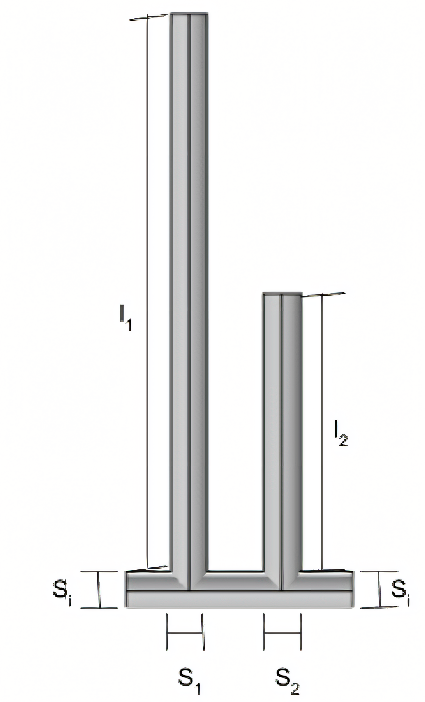
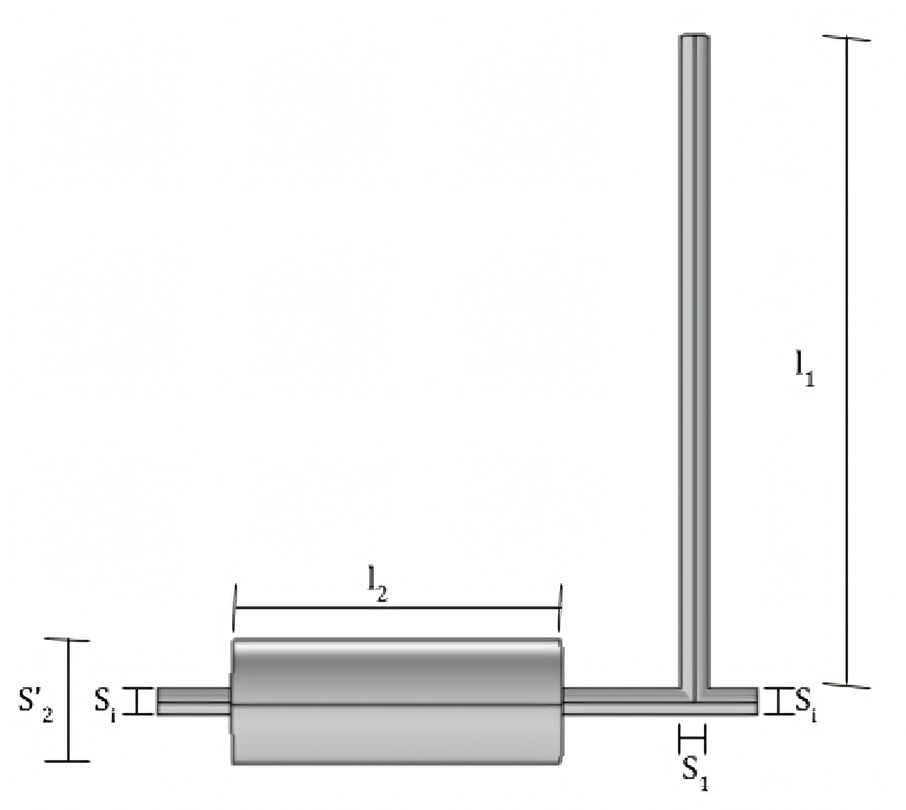

En el presente trabajo se estudia el comportamiento de silenciadores reactivos para la atenuación del sonido proveniente de una lijadora industrial. Se analiza el archivo de audio para luego diseñar, construir y medir un silenciador reactivo para atenuar las frecuencias de interés. Se realiza un análisis espectral de la máquina con el software EASERA. Una vez determinadas aquellas frecuencias a atenuar se procede a diseñar un silenciador y estimar la efectividad del diseño mediante el método numérico de COMSOL y el Método de los Cuadripolos. Para finalizar, se mide con un micrófono la transmisión de las distintas frecuencias a través del silenciador para estudiar si el modelo teórico se condice con el comportamiento del prototipo.

